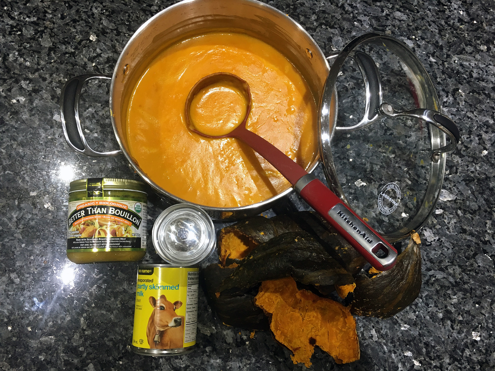
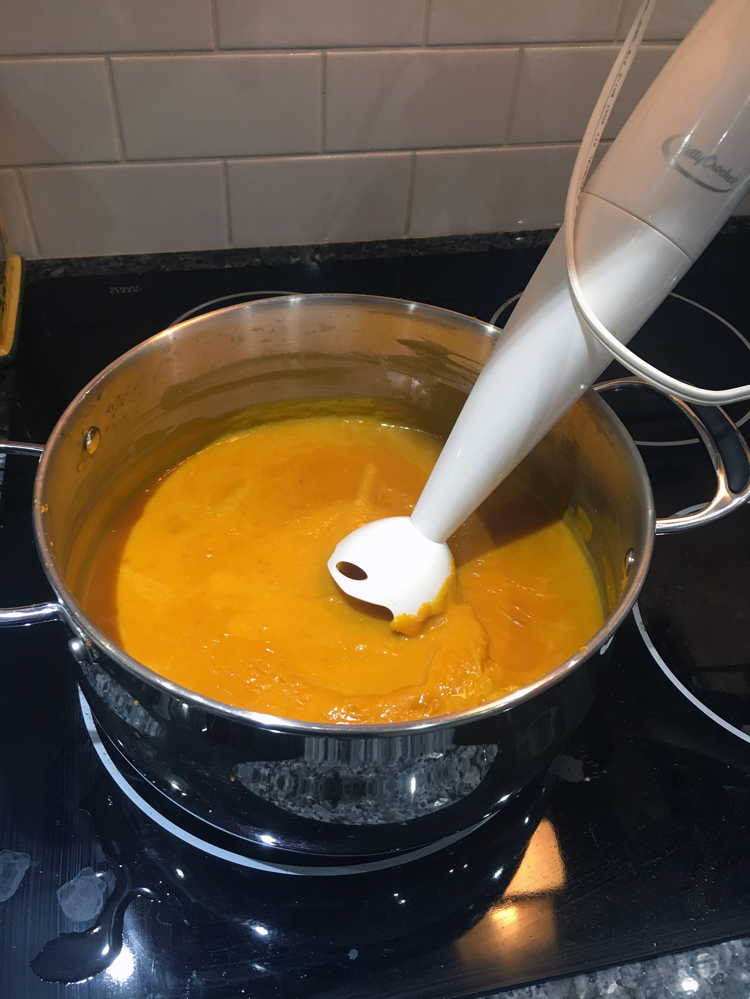

Butternut squash soup offers a vegetarian option that comes packed with flavors. A colorful fun, delicious option that is simple to make and tastes great.
Things You Need

- 1 Squash
- 1 Can of evaporated milk
- 2 Cups of chicken or vegetable broth
- Salt and pepper
I suggest a bread roll on the side.
Step 1
Cut squash in half and remove all seeds.
Step 2
Place squash on a baking tray, cut side down.
Step 3
Bake in a preheated oven at 385 degrees for 1 hour.
Step 4
Allow squash to cool then scrape squash vegetable from shell.
Step 5
Place squash in pot and mash or puree.
Step 6
Mix in milk and broth and mix thoroughly.
Step 7
Add salt and pepper to taste.
Step 8
Serve in bowl with toasted bread roll.